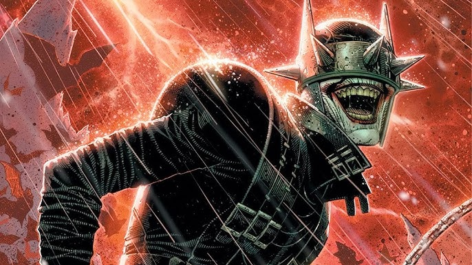

The Darkest Batman
The Batman Who Laughs comes from a dark universe where Batman is infected with the Joker’s toxin. This transformation merges Batman’s intelligence with the Joker’s chaotic insanity. He becomes a ruthless villain with no moral limits, capable of destroying entire worlds. His design, with spiked visor and sinister grin, reflects his twisted duality. This version represents what would happen if Batman abandoned all restraint and ethics. His existence shows the terrifying potential of Batman’s mind when corrupted by madness.

The Batman Who Laughs is compelling because he embodies the darkest possible future for Batman. He outsmarts heroes by thinking like both Batman and the Joker simultaneously. His strategies are unpredictable, making him one of the most dangerous beings in the multiverse. Stories featuring him explore fear, corruption, and the fragility of morality. He challenges not only Batman but the entire concept of heroism itself. This makes him a unique, terrifying, and unforgettable version of the character.